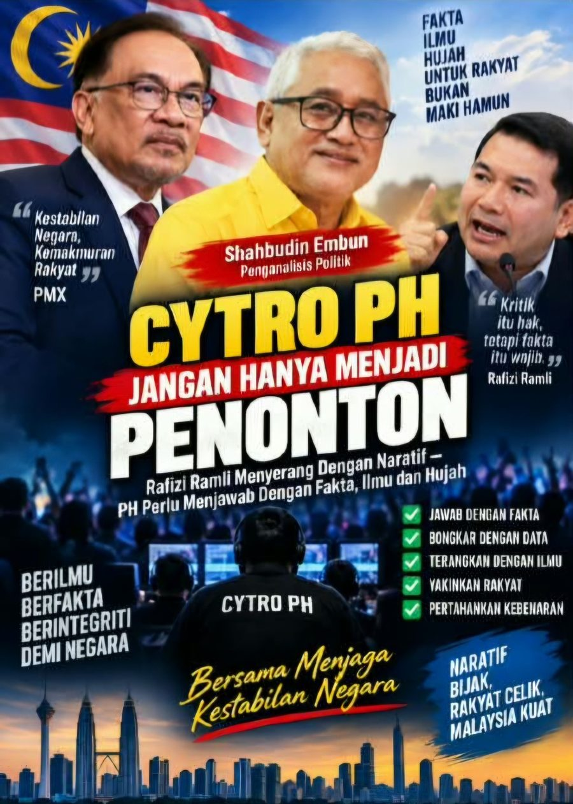

CYTRO PH JANGAN HANYA MENJADI PENONTON
Rafizi Ramli Menyerang Dengan Naratif — PH Perlu Menjawab Dengan Fakta, Ilmu dan Hujah
Oleh: *Shahbudin Embun*
Penganalisis Politik
Perbualan saya dengan seorang sahabat yang juga penulis politik dan pencipta kandungan politik membawa saya kepada satu persoalan yang cukup serius:
Di manakah pasukan cyber troopers atau CYTRO PH ketika naratif yang menyerang Perdana Menteri dan Kerajaan Madani semakin rancak dimainkan di ruang awam?
Persoalan ini bukan kerana kita mahu melihat politik Malaysia dipenuhi dengan perang maki-hamun di media sosial.
Sebaliknya, persoalannya ialah mengapa pihak yang mempunyai mandat untuk mempertahankan dasar dan pencapaian kerajaan tidak tampil memberikan jawapan yang setimpal apabila sesuatu naratif politik dilemparkan kepada rakyat?
Dalam era media sosial hari ini, politik bukan lagi hanya berlaku di Dewan Rakyat, ceramah politik atau sidang media.
Politik berlaku setiap minit di TikTok, Facebook, YouTube, X, podcast dan WhatsApp.
Satu video berdurasi beberapa minit boleh membentuk persepsi jutaan rakyat.
Sebab itu apabila seseorang tokoh politik seperti Rafizi Ramli tampil membawa pelbagai hujah, kritikan dan dakwaan dalam roadshow serta platform digitalnya, jawapan yang diperlukan bukanlah sekadar:
"Dia fitnah."
Bukan juga:
"Dia dengki."
Dan jauh sekali sekadar memaki atau menyerang peribadinya.
Itu bukan jawapan.
Kalau hujahnya salah, tunjukkan di mana salahnya.
Kalau angka yang digunakan tidak tepat, kemukakan angka yang benar.
Kalau fakta diputarbelitkan, bawa dokumen, data dan sumber asal.
Kalau sesuatu dasar kerajaan mempunyai rasional ekonomi, sosial atau pentadbiran, terangkan kepada rakyat dengan bahasa yang mudah difahami.
Itulah CYTRO yang kita perlukan.
JANGAN LAWAN ILMU DENGAN MAKI HAMUN
Dalam perbualan saya dengan sahabat saya, Sayuti Omar, atau lebih dikenali sebagai SMO, kami bersetuju tentang satu perkara:
Untuk mencabar Rafizi, seseorang itu mesti mempunyai ilmu dan homework.
Rafizi bukanlah lawan yang boleh dijawab dengan sekadar slogan.
Beliau mempunyai latar belakang ekonomi, pengalaman politik, kemahiran berhujah dan kebolehan menggunakan angka serta naratif untuk menyampaikan mesej kepada khalayak.
Maka, sesiapa yang mahu menjawabnya perlu datang dengan persediaan yang sama serius.
Baca.
Kaji.
Semak.
Research.
Fahami isu.
Kemudian jawab.
Bukan sekadar membuka TikTok dan terus menaip:
"Rafizi bodoh."
Itu tidak akan mengubah fikiran seorang pun.
Malah, ia mungkin menjadikan naratif lawan semakin kuat.
Kita perlu faham bahawa orang Melayu, anak muda dan pengundi atas pagar hari ini semakin kritikal.
Mereka tidak semestinya mahu mendengar siapa yang paling kuat menjerit.
Mereka mahu tahu:
Siapa yang mempunyai fakta?
CYTRO PH PERLU NAIK SATU TAHAP
Saya tidak mengatakan semua CYTRO PH tidak berfungsi.
Tetapi jika kerajaan mahu mempertahankan naratifnya dengan berkesan, pasukan komunikasi digital perlu bergerak ke satu tahap yang jauh lebih profesional.
Kita memerlukan cyber intelligence, bukan sekadar cyber warriors.
Bezanya besar.
Cyber warrior mungkin hanya tahu menyerang.
Tetapi cyber intelligence tahu:
apakah isu yang sedang berkembang;
apakah naratif yang sedang dibina;
apakah fakta sebenar;
apakah kelemahan hujah pihak lawan;
apakah data yang boleh digunakan;
apakah sumber yang sah;
dan bagaimana menjelaskan fakta itu kepada rakyat dengan bahasa yang mudah.
Itulah standard yang sepatutnya.
Setiap kali ada ceramah atau roadshow yang membawa dakwaan terhadap PMX atau kerajaan, pasukan yang bertanggungjawab tidak sepatutnya menunggu sehingga isu itu menjadi viral.
Mereka sepatutnya sudah bersedia dengan fact sheet, timeline, angka, dokumen, video pendek dan jawapan point-by-point.
JANGAN BIARKAN PMX BERJUANG SEORANG DIRI
Ada satu perkara yang saya katakan kepada sahabat saya malam itu.
Kita mungkin mempunyai perbezaan politik.
Kita mungkin tidak bersetuju dengan semua keputusan kerajaan.
Tetapi dalam keadaan Perdana Menteri memikul tanggungjawab mentadbir sebuah negara yang kompleks, tidak wajar semua beban mempertahankan kerajaan diletakkan di atas bahu PMX seorang diri.
Menteri-menteri perlu bercakap.
Ahli-ahli Parlimen perlu bercakap.
Parti-parti komponen perlu bercakap.
Pakar ekonomi perlu menerangkan.
Akademia perlu memberikan perspektif.
Dan pasukan komunikasi digital perlu melakukan kerja mereka.
PMX tidak boleh dibiarkan menjadi satu-satunya orang yang menjawab segala-galanya.
Rakyat TIDAK PERLUKAN CYTRO UPAHAN
Saya lebih suka menggunakan istilah cyber communicators yang berilmu.
Kerana rakyat sudah semakin muak dengan perang siber yang hanya mengandungi:
"bodoh..."
"bangang..."
"penipu..."
"walaun..."
"macai..."
Politik seperti ini tidak membina negara.
Kalau kerajaan mempunyai hujah yang kuat, angkat hujah itu.
Kalau kerajaan mempunyai pencapaian, tunjukkan pencapaian itu.
Kalau terdapat kelemahan, akui dan jelaskan apa yang sedang dilakukan untuk memperbaikinya.
Itulah komunikasi politik yang matang.
JANGAN TAKUT DENGAN RAFIZI — TETAPI JANGAN PANDANG RENDAH
Pada pandangan saya, Rafizi tidak perlu ditakuti.
Tetapi beliau juga tidak boleh dipandang rendah.
Beliau mempunyai kekuatan tertentu dalam komunikasi politik dan penggunaan data.
Sebab itu orang yang mahu menjawabnya perlu mempunyai standard yang lebih tinggi daripada sekadar fanatik politik.
Kalau pihak lawan membawa satu angka, kita bawa angka yang lebih tepat.
Kalau pihak lawan membawa satu laporan, kita baca laporan tersebut.
Kalau pihak lawan membuat dakwaan, kita semak sumber asal.
Kalau hujahnya benar, akui.
Kalau hujahnya salah, bongkar dengan fakta.
Itulah cara memenangkan perdebatan.
PMX PERLU DIBELA DENGAN PRESTASI, BUKAN PUJIAN KOSONG
Saya secara peribadi percaya bahawa Perdana Menteri Datuk Seri Anwar Ibrahim mempunyai satu tanggungjawab besar yang jauh lebih penting daripada melayan setiap serangan politik.
Beliau perlu terus mentadbir.
Tetapi orang di sekelilingnya perlu memastikan rakyat mendapat gambaran yang lengkap tentang apa yang dilakukan oleh kerajaan.
Jangan hanya muncul apabila pilihan raya semakin dekat.
Jangan hanya menjawab selepas sesuatu video sudah mendapat jutaan tontonan.
Kerja komunikasi mesti berlaku setiap hari.
Kerajaan mesti mempunyai naratif yang konsisten, mudah difahami dan disokong fakta.
Dan apabila kritikan datang, jangan panik.
Jawab.
KITA BANTU, BUKAN MEMBUTA TULI
Saya bukan mengatakan PMX tidak boleh dikritik.
Sebaliknya, kerajaan yang kuat ialah kerajaan yang mampu menerima kritikan dan menjawabnya secara matang.
Tetapi saya juga tidak mahu melihat kritikan berubah menjadi propaganda tanpa jawapan.
Sebab itu saya memilih untuk membantu dari sudut yang saya mampu.
Bukan kerana saya menganggap PMX manusia sempurna.
Tetapi kerana saya percaya Malaysia memerlukan kestabilan, kesinambungan pentadbiran dan kepimpinan yang serius dalam menghadapi cabaran negara.
Saya sering berkata kepada mereka yang terlalu membenci PMX:
"Hangpa mati hidup balik pun belum tentu dapat pengganti seperti Anwar Ibrahim."
Ini bukan bermaksud tiada pemimpin lain.
Tetapi seorang pemimpin yang mempunyai perjalanan politik yang panjang, pengalaman, idealisme, kemampuan bertahan melalui pelbagai ujian dan akhirnya sampai ke puncak kepimpinan negara bukanlah sesuatu yang mudah dilahirkan.
Mungkin kita perlu menunggu satu generasi.
Dan jika benar Anwar mahu dilihat sebagai seorang Perdana Menteri dalam politik negara, maka seorang PEMIMPIN ULUNG juga memerlukan di angkat martabat yang bertaraf MUJADID dalam perjalanan Perjuangan yang panjang untuk membentuk dirinya Sebagai PEJUANG BANGSA.In Sha Allah
Namun akhirnya, sejarah yang akan menentukan.
PESANAN SAYA KEPADA CYTRO PH
Kalau benar mahu mempertahankan PMX dan Kerajaan Madani, jangan menjadi CYTRO yang hanya muncul untuk menyerang.
Jadilah CYTRO yang rakyat hormati.
Bina pasukan yang:
berilmu + berdisiplin + pantas + berfakta + berani + profesional.
Setiap isu mesti ada research team.
Setiap dakwaan mesti ada fact-checking.
Setiap angka mesti ada sumber.
Setiap serangan mesti dijawab dengan hujah.
Dan setiap video lawan yang viral mesti mempunyai jawapan yang lebih baik — bukan lebih bising.
Kerana dalam politik moden, siapa yang menguasai naratif akan menguasai persepsi.
Dan siapa yang menguasai fakta, akan lebih mudah menguasai naratif.
Rafizi dan sesiapa sahaja berhak mengkritik kerajaan.
Tetapi kerajaan dan penyokongnya juga berhak menjawab.
Cuma jawablah dengan ilmu, fakta dan hujah.
Jangan biarkan PMX keseorangan.
Kalau kita percaya kepada kepimpinan beliau, maka tugas kita bukan sekadar memuji beliau — tetapi membantu memastikan rakyat mendapat fakta yang sebenar sebelum mereka membuat penilaian.
Itulah cyber trooper yang saya mahu lihat.
Bukan cyber gangster.
Bukan cyber maki-hamun.
Tetapi cyber communicator yang berilmu dan berintegriti.
Shahbudin Embun
Penganalisis Politik
← Kembali ke halaman utama